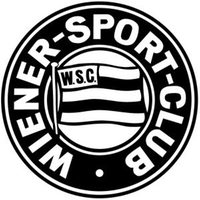

Übungsseite: Wiener Sportclub
Verein
Der Wiener Sport-Club (oft kurz „WSC“ oder einfach nur „Sport-Club“ genannt) ist einer der ältesten Sportvereine Österreichs. Der Verein ging aus dem am 24. Februar 1883 gegründeten Wiener Cyclistenclub hervor. Seit Sommer 2017 ist die Fußballsektion nach über 15 Jahren Abwesenheit neben den Sektionen Fechten, Rad, Laufen, Squash, Schwimmen & Wasserball wieder in den Gesamtverein eingegliedert.
Sektionen
Der Wiener Sportklub gliedert sich in folgende Sektionen:
- Fechten
- Rad
- Wasserball
- Schwimmen
- Squash
- Fußball
- Laufen
- Eishockey
- Petanque
- Tischfußball
- EMCA
Spieler
| Nummer | Name | Position |
|---|---|---|
| 01 | Florian Prögelhof | Tor |
| 27 | Jürgen Csandl | Verteidigung |
| 17 | Philip Dimov | Verteidigung |
| 05 | Luka Gusic | Verteidigung |
| 03 | Philipp Haas | Verteidigung |
| 20 | Hannes Küng | Verteidigung |
| 04 | Niklas Marlovics | Verteidigung |
| 94 | Emmanuel Ojukwu | Verteidigung |
| 13 | Lucas Pfaffl | Verteidigung |
| 18 | Dominik Akrap | Mittelfeld |
| 23 | Mirza Berkovic | Mittelfeld |
| 30 | Philip Buzuk | Mittelfeld |
| 08 | Florian Gerstl | Mittelfeld |
| 21 | Berat Kocak | Mittelfeld |
| 11 | Aleksandar Kostic | Mittelfeld |
| 31 | Liam Kratky | Mittelfeld |
| 07 | Martin Pajaczkowski | Mittelfeld |
| 06 | David Rajkovic | Mittelfeld |
| 16 | Emirhan Tütünci | Mittelfeld |
| 29 | Miroslav Beljan | Sturm |
| 09 | Felix Kerber | Sturm |
| 19 | Gerasim Pavlovic | Sturm |
| 12 | Mario Vucenovic | Sturm |